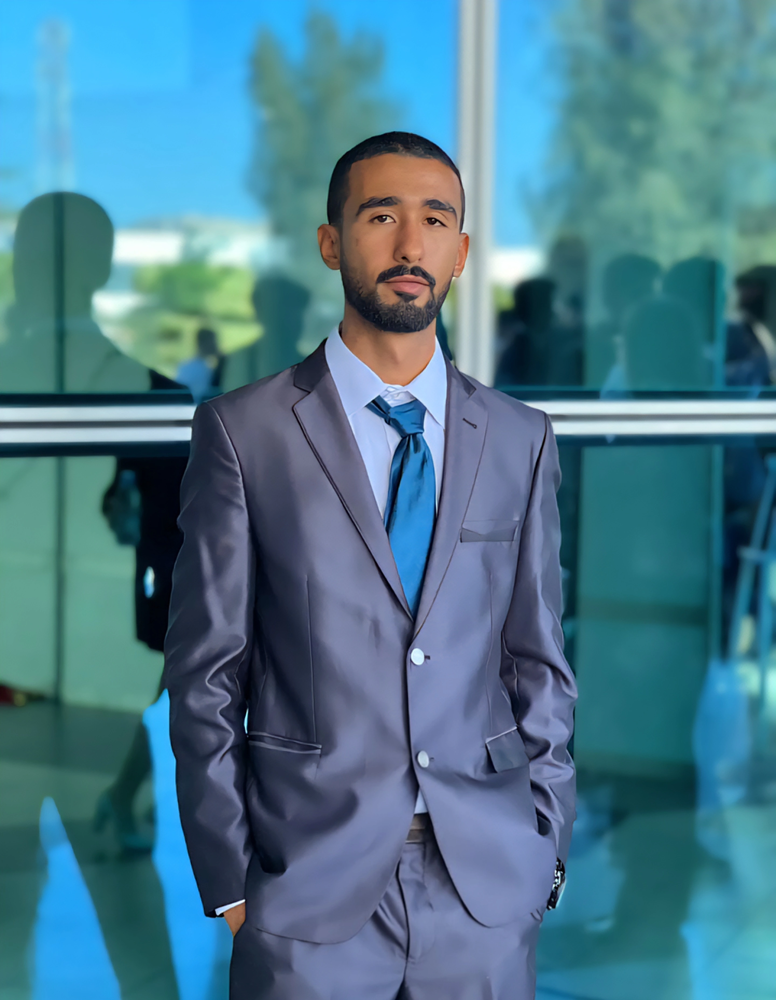

Building hands-on offensive security and machine learning skills toward becoming an AI Security Engineer — focused on AI-driven vulnerability research and adversarial machine learning. Currently seeking a national internship.

First-year engineering student at Sup'Com (Higher School of Communication of Tunis) with strong mathematical foundations from a two-year preparatory program. I train hands-on in offensive web security and Linux systems, while studying AI/ML foundations as a basis for adversarial machine learning and AI-driven vulnerability research. My long-term goal: AI Security Engineer.
eJPT — eLearnSecurity Junior Penetration Tester
Status: in progress
Completed the Linux Luminarium module; currently progressing through Computing 101. Also active on TryHackMe, PortSwigger Web Security Academy, Hack The Box Starting Point, and picoCTF.
Built and maintain a personal cheat sheet covering core Linux administration topics learned through pwn.college challenges — including PATH hijacking, permissions, and text-processing workflows.
Analyzed a web application penetration testing case end-to-end: attack chains and remediation strategies for XSS with JWT hijacking, HTTP Parameter Pollution, SQL Injection, and Local File Inclusion.
Student-led social impact project for diabetes awareness, run end-to-end: fundraising, sponsorships, social media, and public events.
Diplôme d'Ingénieur, Telecommunications — 1st year. Working toward the CySed (cybersecurity) specialization track, a GPA-gated program.
Built strong mathematical foundations in preparation for the engineering cycle.
+216 22 035 055
Tunisia
Arabic — Native
English — Fluent
French — Reading proficiency